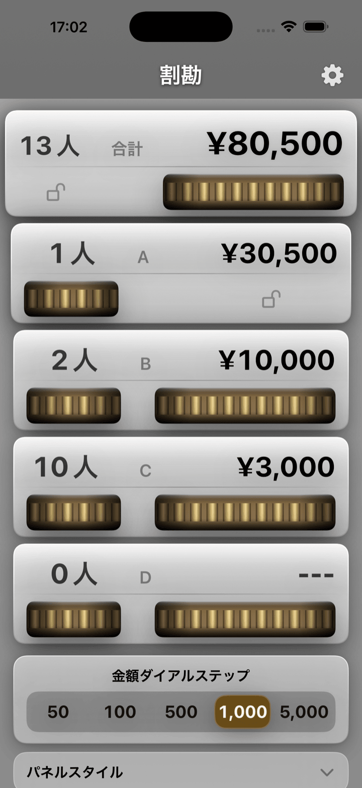
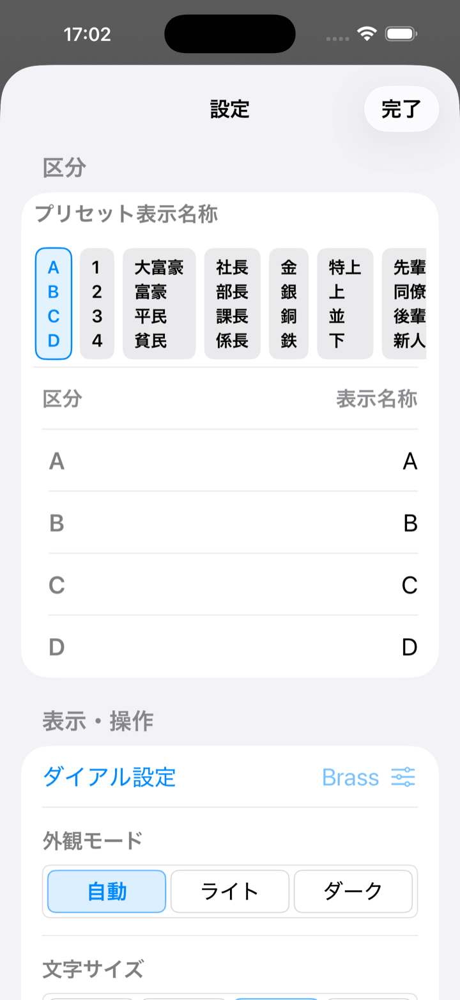
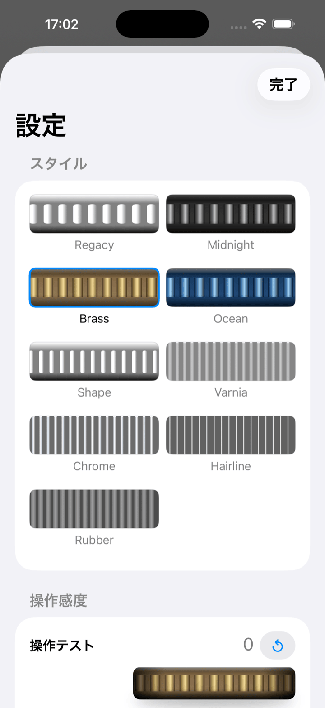
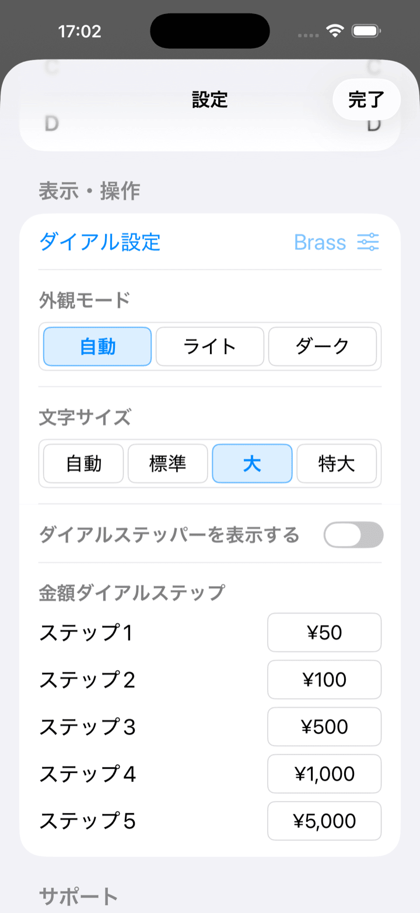
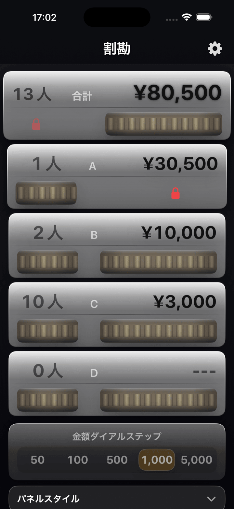
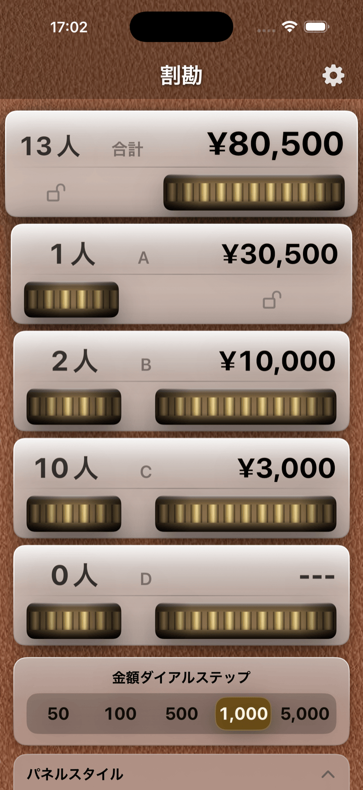
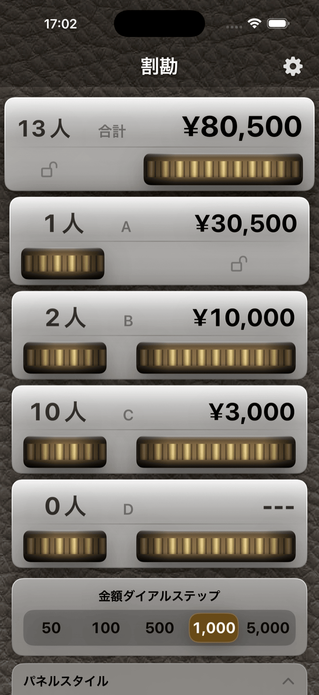

割勘 取扱説明
画面を見ながら使える、図解中心のガイド
割勘は、人数と金額をダイアルで調整しながら支払い配分を決めるアプリです
このページでは、文字を追うよりも先に画面全体の役割がつかめるよう、主画面、ロック、設定、通貨表示を図版中心でまとめています
4区分
A / B / C / D を個別に調整
2ロック
人数ロックと全操作ロック
通貨対応
ロケールに合わせて自動表示
主画面
丸をタップすると、その場所の説明が開きます

空いている場所をタップすると説明を閉じます
使い方の流れ
1
合計金額を入れる
上段の合計金額を回すか、金額表示をタップしてテンキーで入力します
2
人数を合わせる
A / B / C / D の人数ダイアルで区分ごとの人数を決めます
3
金額を寄せる
B / C / D の金額を調整すると、A の金額が自動計算されます
4
必要ならロック
人数だけ固定するか、全操作を固定して誤操作を防ぎます
設定画面の見方
設定画面
丸をタップすると、項目の役割が開きます

設定の詳細は、下の補足キャプチャでも確認できます
通貨ロケール対応
日本語 / 日本
¥12,000
ダイアルステップ例: 1 / 10 / 100 / 500 / 1000
整数通貨として扱います。ステップ表示は通貨記号なしの数値です
英語 / 米国
$12.00
ダイアルステップ例: 0.01 / 0.10 / 1.00 / 5.00 / 10.00
小数2桁の通貨では、最小通貨単位を基準に金額を保持します
英語 / クウェート
KWD 1.000
ダイアルステップ例: 0.001 / 0.010 / 0.100 / 0.500 / 1.000
小数3桁の通貨にも対応し、表示と内部単位がずれないよう扱います
画面キャプチャの補足
外観とダイアル設定

ダイアル設定の行から、感度や見え方の調整シートを開けます
外観モード

自動、ライト、ダークを選べます。自動はシステム設定に従います
ダーク表示

暗い環境ではダーク表示へ切り替えて見やすさを保てます
背景バリエーション


背景はブラウンレザーとブラックレザーを切り替えられます。モノトーンは設定から選択できます
履歴
| Version | 公開日 | 開発環境等 |
|---|---|---|
| 1.0.0 | 2011/10/4 | 初版リリース — Objective-C, Xcode 4, iOS 4 |
| 1.1.0 | 2012/4/10 | Objective-C, Xcode 4, iOS 5 |
| 1.2.0 | 2017/4/19 | Objective-C, Xcode 8, iOS 10 |
| 2.0.0 | 2026/4/16 | Swift 6 / SwiftUI, Xcode 26, iOS 26 |
| 2.0.1 | 2026/4/17 | 開発者応援機能（投げ銭・広告）追加 |
| 2.1.0 | 2026/4/22 | 人数ロック・全操作ロック・ダイアル設定・外観モード・背景設定・金額ダイアルステップ設定・通貨ロケール対応を追加 |